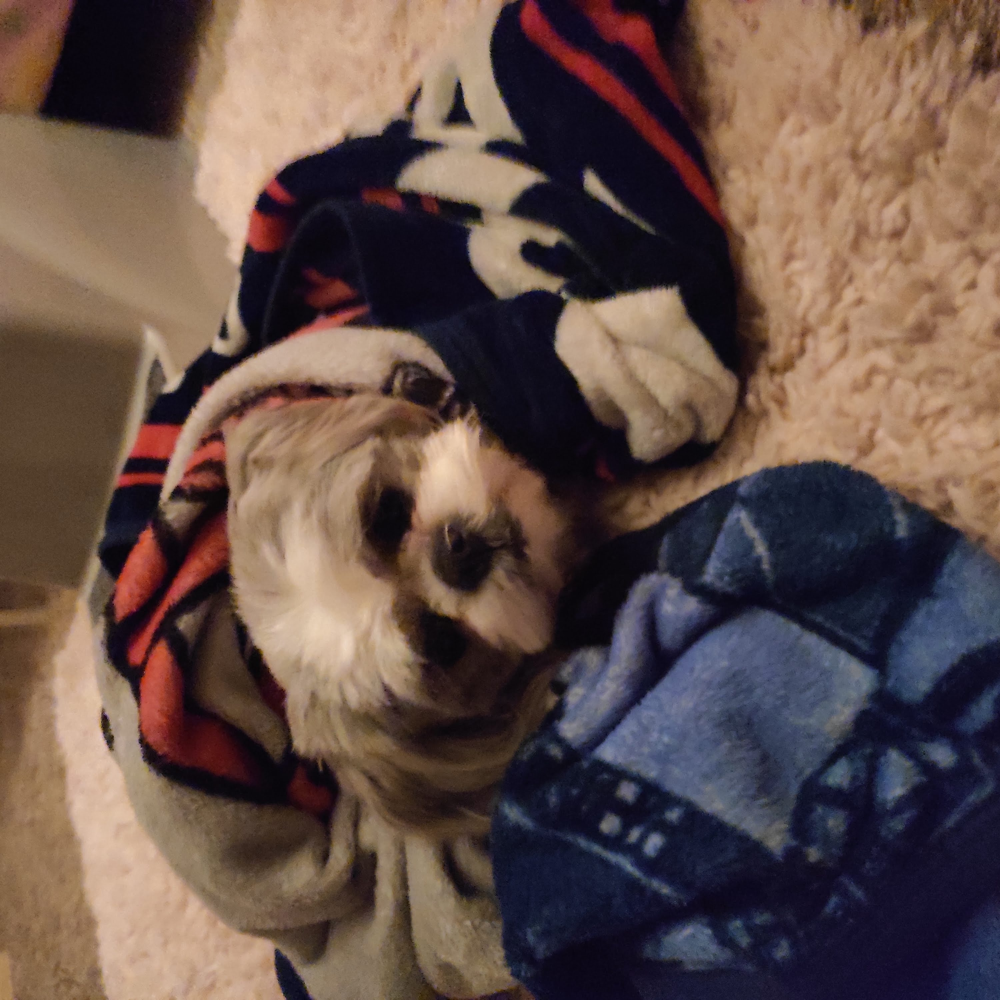

Jemma Wrapped up in a blanket
- She is overweight...like really really overweight.
- Jemma eats so fast that we had to buy her a special bowl to keep her from choking
- Jemma's birthday is in July.
- If she tries to escape, just yell "treat!" to her and her hefty self will come huffing back.
- She thinks belly rubs are neat.
- She is a Shih Tzu.
- The Mandarin phrase “Shih Tzu” translates to little lion.
- Celebrity owners of Shih Tzu include Nicole Richie, Mariah Carey, Beyoncé, Colin Farell, and Bill Gates.
- The breed remained hidden behind palace walls, virtually unknown to the outside world, until the 1930s.
- For hundreds of years, Shih Tzu lived the life of royal lap warmers and were pampered by emperors and their families.
- They tend to live happily in pretty much any kind of space—from small apartments to spacious homes.
- Since they are so small, they can run laps around your living room for exercise in a pinch.